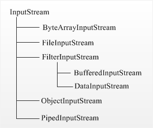

InputOutput
Реализации
- ByteArrayInputStream
- StringBufferInputStream - Deprecated. Use StringReader.
- FileInputStream
- PipedInputStream
- SequenceInputStream
- FilterInputStream - абстрактный класс для классов-надстроек.
- DataInputStream
- BufferedInputStream
- LineNumberInputStream - Deprecated.
- PushbackInputStream
